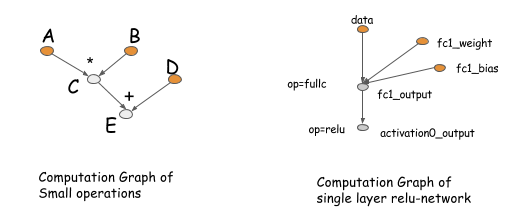
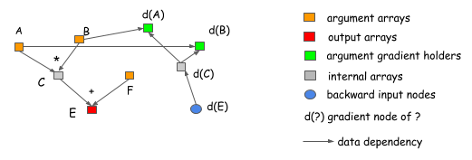
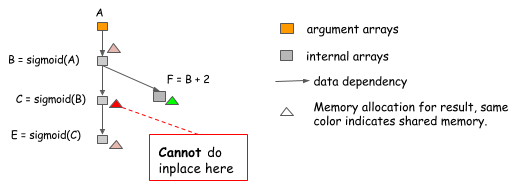

优化深度学习中的内存使用（翻译）
翻译自：https://mxnet.incubator.apache.org/architecture/note_memory.html
过去十年中，深度学习一直在往更深和更大的网络发展。尽管硬件也在快速地发展，最前沿的深度学习模型一直将 GPU 的内存用到极限。所以，我们总是想找到方法来用尽量少的内存训练更大的模型。这使我们能够训练的更快，使用更大的分批大小，从而实现更高的 GPU 利用率。
在这篇文章中，我们会探索在深度神经网络中，优化内存分配的各种技术。我们讨论了一些候选解决方案。虽然我们这里无法覆盖到所有可能的方案，但是这些都很有教育性并且足够让我们介绍设计中要面临的主要问题。
计算图
首先让我们复习一下计算图的思想。一个计算图描述了深度学习网络中不同操作之间的依赖关系。计算图中执行的操作可以是细粒度的也可以是粗粒度的。下图展示了两个计算图的例子。

计算图的概念在 Theano 和 CGT 等库中是显式地编码的。在其他库中，计算图隐式地出现在网络的配置文件中。这些库之间的主要不懂点在于它们如何计算梯度。主要有两种方式：在同一个图中进行反向传播，或者显式地表示一个反向路径来计算需要的梯度。
像Caffe, CXXNet 和 Torch 之类的库使用前一种方式，在原始的计算图中进行反向传播。而 Theano 和 CGT 这些库使用后一种方式，显式地表示出反向路径。在我们的讨论中，我们使用后者，因为它对于优化有些优势。
然而，我们应该强调显式的反向路径方式，并不会限制我们只能在符号式库如 Theano 和 CGT 中使用它。在基于层（前向和反向操作绑定在一起的）库中，我们也可以使用显式的反向路径来计算梯度。大体上说，我们引入一个反向的节点，把它连接到前向节点中，然后在反向操作中调用 layer.backward。
这些适用于几乎所有的深度学习库。（各个库之间存在不同，比如，告诫微分，但这不在我们的讨论范围内）
为什么显式的反向路径更好？让我们用两个例子来解释。第一个理由是显式的反向路径清晰地描述了计算之间的依赖关系。考虑以下例子，我们想要得到 A 和 B 的梯度。从图上我们可以清楚地看到，算 d(C) 的梯度的计算不依赖与 F。这意味着我们在前向计算完成后立刻释放掉 F 的内存。类似的，C 的内存也可以被回收。

显式的反向路径的另一个好处是，它让我们而已有一个不同的反向路径，而不是局限于是前向路径的镜像。一个常见的例子是 split connection，如下图所示。
在这个例子中，B 的输出被两个后续操作用到。如果我们想要在同一个网络中计算梯度，我们需要显式地引入一个分离层。这意味着我们在前向路径中也要有这么一个分离层。在这个图中，前向路径没有分离层，但是计算图会在把梯度传回给 B 之前，自动地插入一个梯度聚合节点。这帮助我们节省了分配分离层的输出的内存和在前向路径中复制数据的操作开销。
如果我们采用显式反向传播的方式，那么在前向路径和反向路径之间没有什么区别。我们可以简单地根据计算图，依时间顺序逐步计算。这使得显式的反向传播方式更易于分析。我们只需要回答这个问题：我们如何为计算图的每个输出节点分配内存。
哪些地方可以优化？
我们看到，在讨论内存分配优化技术时，计算图是个有用的方式。我们已经展示了你如何使用显式的反向图来节省一些内存。现在让我们探索更多的优化，看看我们如何能确定合理的基准。
假设你想要构建一个 n 层的神经网络。一般我们在实现一个神经网络时 ，我们需要给每层的输出和反向时的梯度分配内存。这意味我们大概需要 2n 个存储节点。在使用显式的反向图时情况差不多，因为反向路径上的节点数和前向路径上的差不多。
原地更新的操作
一个最简单的技术是原地更新，并且在操作之间共享内存。在神经网络中，我们可以在激活函数中使用这项 技术。考虑一下情况，我们想要计算三个顺序连接的 sigmoid 函数的输出。
因为我们可以在原地计算 sigmoid，对输入和输出使用相同的内存，所以我们可以使用固定大小的内存来计算顺序连接的任意多个 sigmoid 函数。
注意：在实现原地更新的操作时很容易出错。考虑以下情况，B 的值不仅被 C 用到，而且被 F 用到。

这里我们不能用原地更新，因为 B 的值在计算完 C=sigmoid(B) 之后仍然需要用到。如果优化算法简单地对每个 sigmoid 函数做原地更新的优化，就会出问题，所以我们对此需要小心。
标准的内存共享
原地更新不是唯一的共享内存的方式。在下面这个例子中，因为在计算 E 之后 B 的值就不需要了，我们可以重用 B 的空间来存放 E 的结果。

对内存共享来说，数据形状（data shape）不是一定要相同的。在前面的例子中，B 和 E 的形状可以不同。我们可以给内存区域的大小分配为 B 和 E 所需内存的最大值来处理这种情况。
真实的神经网络中内存分配的例子
当然，这些只是些小例子，并且它们只计算了前向路径。但是在真实的神经网络中，思路是一样的。下图展示了在一个两层的感知器中的内存分配。

在这个例子中：
- act1, d(fc1), out 和 d(fc2) 的计算使用了原地更新
- d(act1) 和 d(A) 之间共享内存
内存分配算法
到目前为止，我们已经讨论了优化内存分配的大体的方法。我们看到实现优化是有些陷阱需要避免，就像在原地更新优化时的情况。所以，我们如何能够正确地分配内存？这不是个新的问题。例如，这和编译器中分配寄存器的问题很类似。我们可以借鉴一些现成的技术。我们不会尝试完整地分析这些技术，而是想要介绍一些简单有效的解决这个问题的技巧。
这里关键的问题是我们需要放置资源，并使它们不要互相冲突。具体一点说，每个变量都有生命周期，指的是变量被计算出到最后一次被用到之间的时间。在上面的多层感知器的例子中，在 act1 计算出之后，fc1 的生命周期就结束了。
我们优化的原则是，保证只有当变量的生命周期不重叠时，才可以共享它们的内存。有许多方法可以实现这点。你可构造一个冲突图 (conflicting graph)，图中的节点代表变量，边代表变量之间的生命周期的重叠，然后使用图染色算法。这个算法的复杂度是 $O(n^2)$，其中 n 是图中节点的数量，这个复杂度可能太高了。
让我们考虑另一种简单的启发式算法。其思路是模拟图的遍历过程，并且给每个节点维护一个计数器，这个计数器保存未来需要这个节点的操作的数量。
- 只有在当前操作时唯一一个依赖于源节点时（count == 1），才可以做原地更新的优化。
- 当 count 变成 0 时，内存可以被回收（放到图中的右上角的方框中）。
- 需要新的内存时，我们可以从方框中获取，或者新分配一块。
注意： 在模拟的过程中，不实际分配内存，而是记录下来每个节点需要多少内存，然后在最终的内存分配计划中取共享内存的节点中的最大值。
静态和动态分配
上面的内存分配策略精确地模拟了命令式语言（如 Python）中动态内存分配的过程。count 是每个对象的引用计数器，当引用计数变成 0 时，这块内存被回收。这样我们就模拟了一次动态内存分配，来创建静态分配计划。我们能不能简单地用命令式语言来动态地分配和释放内存？
这里最大的不同点在于静态分配只需要做一次，所以我们可以使用更复杂的算法。例如，我们可以寻找内存需求大小类似的节点。分配算法也可以根据图的特点来进行分配，下一节中我们将会讨论。动态分配会给快速的内存分配和释放带来更多压力。
还有一点要告诉想使用动态内存分配的用户：不要不必要地引用对象。例如，如果我们把所有节点都放在一个列表中并存在一个 Net 对象里，这些节点的引用永远都不会变成 0，我们就无法获得内存优化。不幸的是，这是个很常用的组织代码的方式。
并行操作中的内存分配
前一节中，我们讨论了如何模拟运行一个计算图的过程来得到一个静态的内存分配计划。然而，要优化并行计算，有另一个挑战，因为资源的共享和并行是需要平衡的两件事。让我们看一下如下的对同一个计算图的两个内存分配计划：
如果我们顺序地从 A[0] 到 A[8] 运行所有计算，那么这两个分配计划都是有效的。然而，左边的分配计划引入了额外的依赖关系，意味着我们不能并行计算 A[2] 和 A[5]，而右边的可以。在并行计算中，我们需要更加小心。
首先保证正确和安全
保证正确是我们首要的原则。这意味着我们需要在实行优化的时候考虑内存共享带来的依赖关系。你可以给计算图添加额外的边来代表隐式的依赖关系。或者更简单一点，如果执行引擎关心更新操作的信息，像在我们在依赖引擎设计中地讨论，顺序地给引擎推送操作并且写入代表同一内存区域的相同的变量标签。
总是生成安全的内存分配计划，永远不要让可以并行的节点共享内存。在需要更优化内存时，这可能不是最理想的方案，而且在可能从同一个 GPU 上同时计算多个流获益的情况下，我们可能不能得到太多内存效率提升。
尝试做更多的并行
现在我们可以安全地做一些优化了。一般的思路是在无法并行的节点之间尽可能共享内存。你可以创建一个祖先关系图（ancestor relationship graph）以便在分配时查询，这大概是 $O(n^2)$ 的时间复杂度。我们也可以使用启发式算法来给路径上色。如下图所示，当你尝试找到图中最长的路径是，把它们涂上相同的颜色然后继续。
给全部节点涂完色之后，你就可以允许（或者鼓励）共享，仅在相同颜色的节点之间。相比祖先关系，这是个更严格的版本，但是它的时间复杂度仅是 $O(n)$，如果你只搜索前 k 条路径。
可以节省多少内存？
我们已经讨论了各种技术和算法，你可以用它们来减少深度学习中的内存使用。你可以用这些方法节省多少内存呢？
在已经为大操作优化过的，粗粒度操作的计算图中，你可以减少大约一半的内存使用。如果你在优化一个使用符号库 (如 Theano) 的细粒度的计算发网络，你甚至可以减少更多内存使用。
这篇文章中的大部分思想启发了 MXNet 的设计。我们还提供了内存使用估算脚本(Memory Cost Estimation Script)，你可以用它来看在不同的情况下，需要使用多少内存。
这个脚本有一个 forward_only 选项，可以只显示前向路径的内存开销。你可以发现使用这个参数时内存开销会比不使用时低很多，那是因为在仅做前向计算时，可以重用更多内存。
两点总结：
- 使用计算图来分配内存。
- 对于深度学习模型，预测比训练少消耗不少内存。